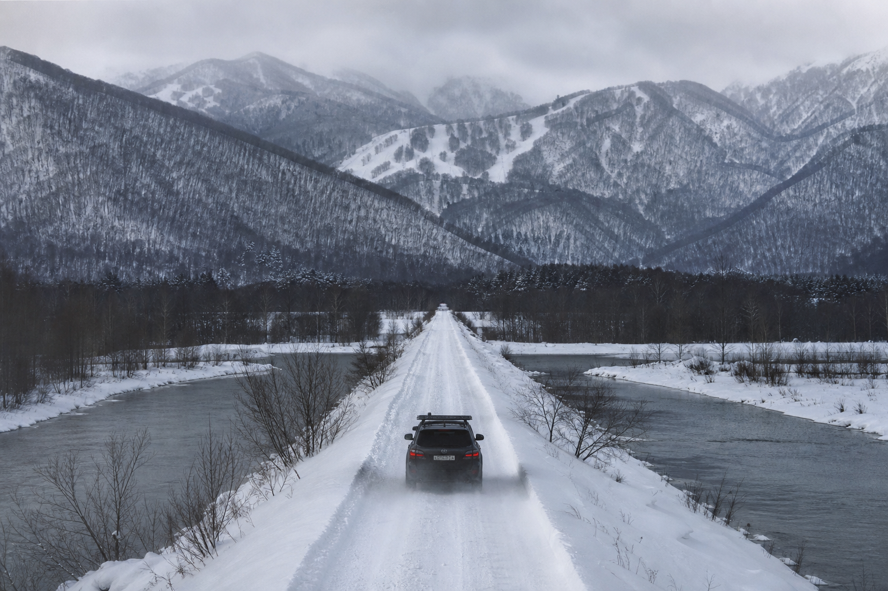
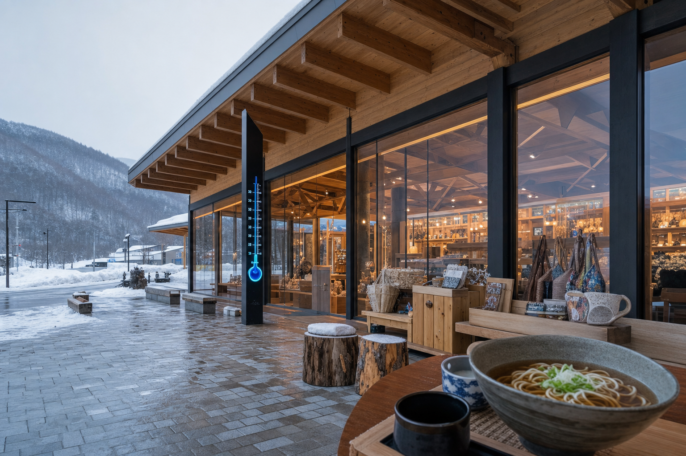
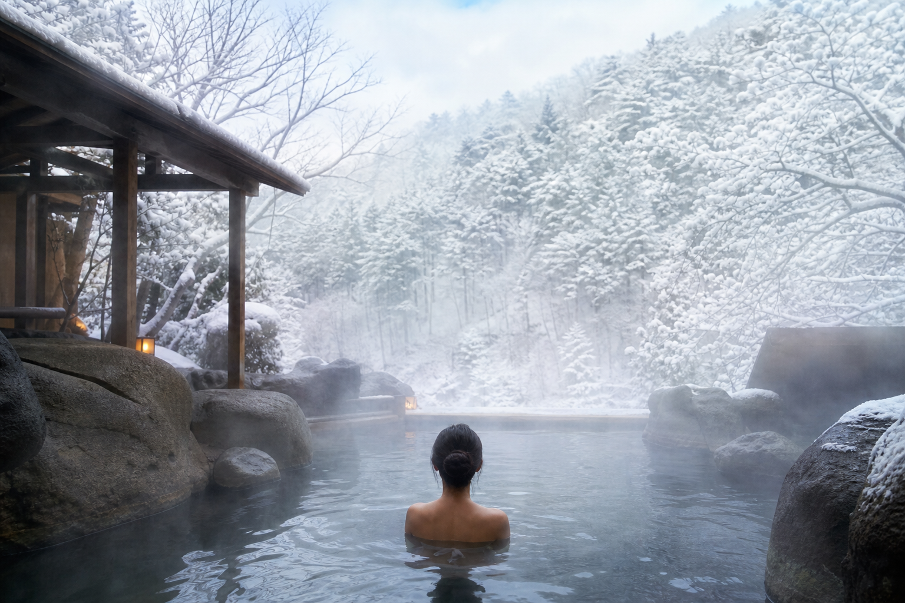

リフトなし · 混雑なし · 純パウダー
牽引2基のみ——チェアリフトも待ち時間もない、上級者100%の非圧雪バーン。GS620m・SL420m、最長1000m・最大25°。平均滞在34分という「短く、濃く」滑るゲレンデ。トマムのリフト待ちとは対極の、国設占冠中央スキー場。
コース・雪質を見る北海道占冠村 · 国設スキー場
リフトなし、混雑なし、純パウダー——牽引2基だけの、上級者100%の秘境。
村民無料 上級者100% 牽引2基 平均滞在34分更新 6/13 9:00
牽引
2基運行
リフトなし · 牽引のみ
コース
GS620m+SL420m
最長1000m · 最大25°
雪質
純パウダー
非圧雪 · 上級者100%
ナイター
18:00〜20:00
水・金のみ

Beyond Tomamu
隣接するトマム・リゾートの喧騒から一歩外れ——国道237号からの狭隘堤防道路を約3km、占冠駅からも同距離。リフトも混雑もない国設ゲレンデで、上級者100%・平均滞在34分という「極小・極上」のJapow体験。レンタカーまたはタクシーで、トマム宿泊者向けシークレットツアーの起点にも。
占冠中央の魅力
Powder Patronage
Shimukappu Powder Patronage——デジタル寄付QRで¥1,000/日または¥10,000/シーズン。村民は引き続き無料。リフト収益ゼロの国設ゲレンデを、パウダー文化の「後援会」モデルで維持するゼロ収益エコシステム戦略の核（LP案）。
Local
村民 無料
Daily
寄付 ¥1,000/日
Season
寄付 ¥10,000/シーズン
Flagship Product
トマム宿泊者向けプレミアムツアー——タクシー送迎、牽引コーチング、純パウダー滑走をパッケージ化。巨大リゾートのゲストを、隣接する国設秘境へ安全に誘導する高付加価値ライン（LP戦略案）。
Tour
Secret Powder Experience ¥30,000〜50,000
トマムとの地理的近接を活かした旗艦商品——牽引2基の限界を超え、客単価と差別化の核に。
シークレットツアーを予約Rope Tow Master
牽引だけのゲレンデだからこそ——正しい乗り方・タイミング・上級者向け効率滑走を認定する「Rope Tow Master」プログラム。木製タグの認定証で、占冠中央の牽引文化をブランド化（LP案）。
Cert
認定 ¥1,500〜2,000
Mobile Rental Van
固定ショップのない国設ゲレンデに、移動式レンタルバンでファットスキーを届ける——深雪・非圧雪に最適化した装備を、堤道沿いの駐車エリアで貸出。Secret Powder Experience・パトロネージ来場者向けの収益補完ライン（LP案）。
Rental
ファットスキー ¥6,000〜8,000/日
Village Ecosystem
ゲレンデ単体では生まれない収益——占冠村の食・温泉・蒸留エコシステムが、11:00〜17:30のジャーニーと来場者ARPU¥6,700〜19,000を形成。パトロネージ来場者の滞在理由を村全体で設計（LP戦略案）。
朝食・ランチの起点——地元食材のモーニングと昼食で、堤道アクセス前のエネルギー補給。ジャーニー11:00スタートの玄関口。
入浴¥700——滑走後の温活と回復。純パウダーの冷えを、森に囲まれた温泉で溶かす定番フェーズ。


11:00–17:30 Model
道の駅ランチから牽引パウダー、温泉、蒸留体験まで——平均滞在34分のゲレンデを軸に、占冠村エコシステムを11:00〜17:30で束ねた来場者収益モデル（LP案）。トマム宿泊者の半日エスケープにも最適。
ZERO-REVENUE ECOSYSTEM · PURE POWDER来場者エリア収益モデル ¥6,700〜19,000/人
01
11:00 道の駅しむかっぷ
朝食・ランチ。地元食材でエネルギー補給
02
12:30 占冠駅→ゲレンデ
堤道約3km · 国道237号からの狭隘路
03
14:00 牽引パウダー
GS620m+SL420m · 上級者100% · 村民無料
04
15:00 Powder Patronage
デジタル寄付QR · ¥1,000/日
05
15:30 湯の沢温泉
森の四季 · 入浴¥700 · 温活回復
06
16:30 トペニワッカ蒸留
メープル・ルプノモリジン体験
07
17:30 タクシー帰還
トマム方面へ——半日エスケープ完了
特集
牽引2基のみ、上級者100%、平均滞在34分——チェアリフトも待ち時間もない国設ゲレンデの位置づけ。GS620m・SL420m、最長1000m・最大25°、水金ナイター18:00〜20:00。隣接トマム巨大リゾートとは対極の、短く濃いJapow体験。
読む村民無料を維持しつつ、来場者はデジタル寄付QRで¥1,000/日・¥10,000/シーズン——リフト収益ゼロの国設ゲレンデを「パウダー文化の後援会」として存続させる戦略。Secret Powder Experience・モバイルレンタルとの組み合わせでARPU延伸（LP戦略案）。
読む狭隘堤防道路・占冠駅から約3km、営業時間（月水金14:00〜20:00、火木14:00〜18:00、土日祝13:00〜18:00）、道の駅しむかっぷ、湯の沢温泉¥700、トペニワッカ／ルプノモリ——11:00〜17:30で¥6,700〜19,000の村周遊を設計。
読むAccess
国道237号からの狭隘堤防道路 · 占冠駅から約3km
TEL 0167-56-2746（スキー場 · シーズン中）